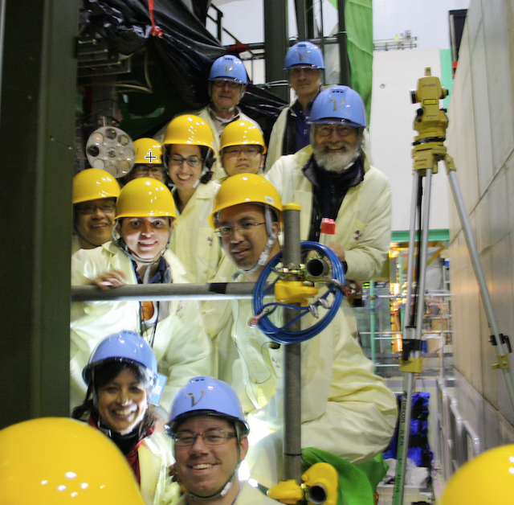
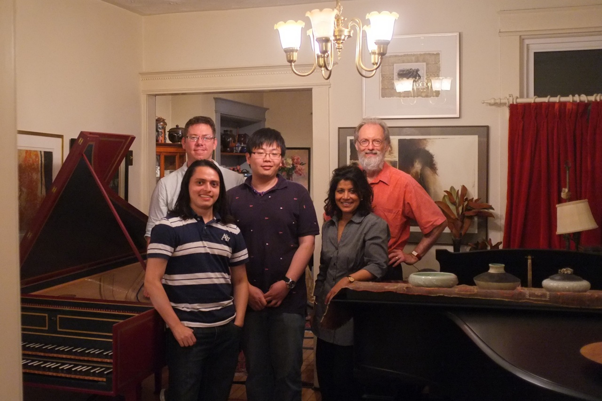

Dr. Sampa Bhadra
Professor of Physics
235 Petrie Building
bhadra at yorku dot ca
Professor of Physics
235 Petrie Building
bhadra at yorku dot ca
Adjunct Professor of Physics
Kavli IPMU (Univ. of Tokyo) / TRIUMF
mark.hartz at ipmu dot jp
Research Associate
234 Petrie Building
arturof at yorku dot ca
PhD Student
244 Petrie Building
myjc at yorku dot ca
PhD Student
234 Petrie Building
mccart17 at yorku dot ca
PhD Student
238 Petrie Building
elder at yorku dot ca

OTR Group next to the OTR detector (Feb 2014)

YorkU HEP-Neutrino Group (June 2013)
Dr. Alysia Marino
Dr. Slavic Galymov
Dr. Brian Kirby
Leif Stawnyczy
Shu Wang
Webmaster: Elder Pinzon
Last Modified: 04-28-2017